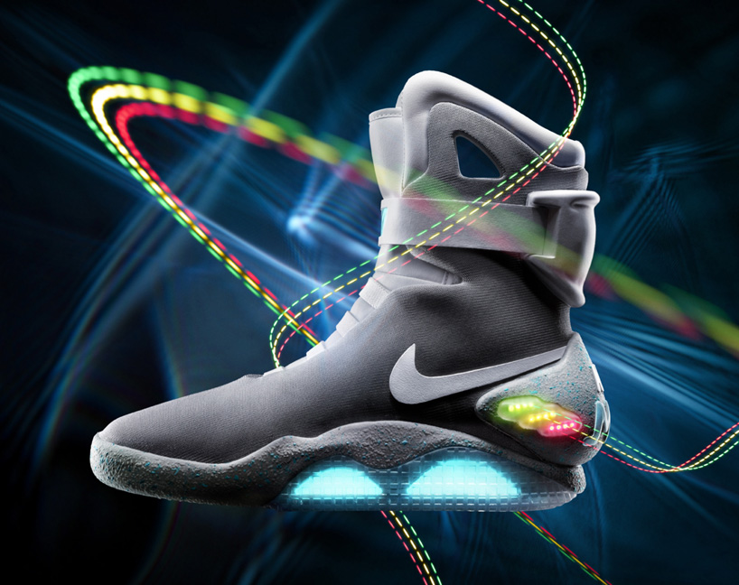
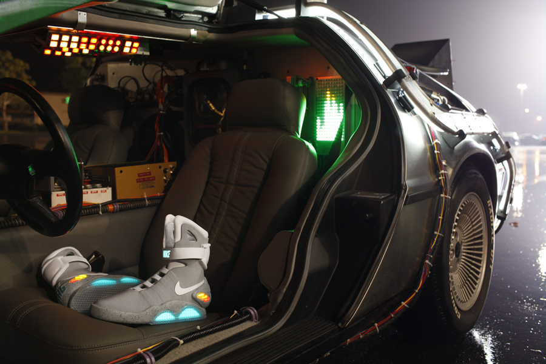

Nike Mag 2011
“Great Scott!” Nike is finally releasing the shoe that every kid in the 80s dreamed of owning. Unfortunately the auto-laces feature doesn’t come out until 2015. With a limited run of 1,500 shoes, Nike is auctioning them off on eBay to benefit the Michael J Fox Foundation for Parkinson’s Research. There is only 10 hours to go on some of the first shoes being auctioned, and the bids are already hitting $6,000.
Now where is my hoverboard?